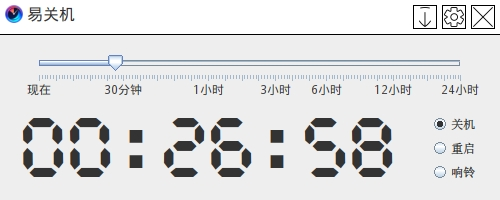

介绍
易关机是一个简单易用的系统管理工具，可以帮助用户轻松地设置系统关机、重启或响铃提醒。它提供了直观的用户界面，使得即使是没有技术背景的用户也能轻松操作。
主要功能
- 设置系统关机时间
- 设置系统重启时间
- 设置响铃提醒时间
- 支持多语言界面
- 系统托盘图标支持，方便快捷操作

Windows版本使用说明
1. 下载并运行「易关机」工具。
2. 打开工具，选择你想要的操作（关机、重启、响铃）。
3. 使用滑动条设置时间。
4. 继续你的工作，时间到达后，系统会自动执行所选操作。
5. 如果需要，可以通过系统托盘图标进行快捷操作。
Linux版本使用说明
1. 下载并使用ROOT权限运行「易关机」工具。
2. 打开工具，选择你想要的操作（关机、重启、响铃）。
3. 使用滑动条设置时间。
4. 继续你的工作，时间到达后，系统会自动执行所选操作。
5. 如果需要，可以通过系统托盘图标进行快捷操作。
P.s Linux关机需要ROOT权限，如果没有权限，则仅能使用响铃功能。
MacOS版本使用说明
1. 下载并使用ROOT权限运行「易关机」工具。
2. 打开工具，选择你想要的操作（关机、重启、响铃）。
3. 使用滑动条设置时间。
4. 继续你的工作，时间到达后，系统会自动执行所选操作。
5. 如果需要，可以通过系统托盘图标进行快捷操作。
P.s MacOS关机需要ROOT权限，如果没有权限，则仅能使用响铃功能。